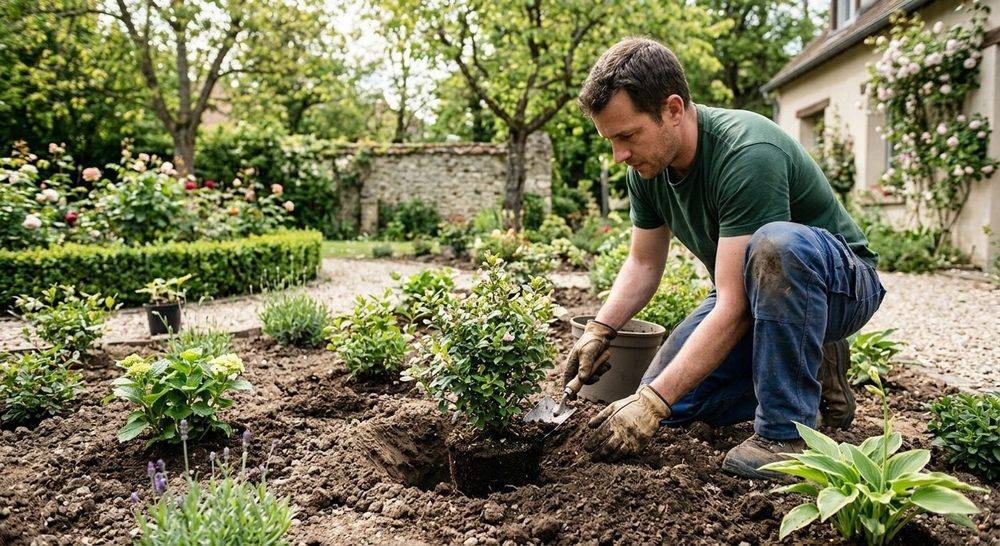
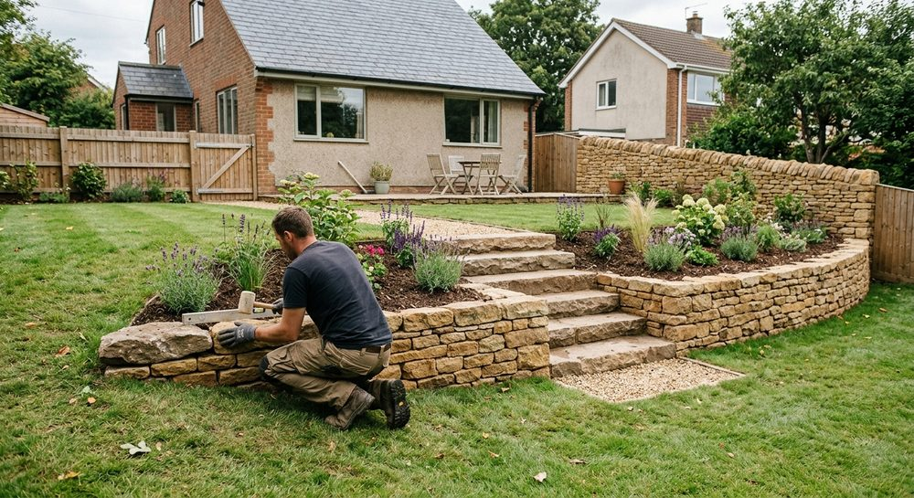
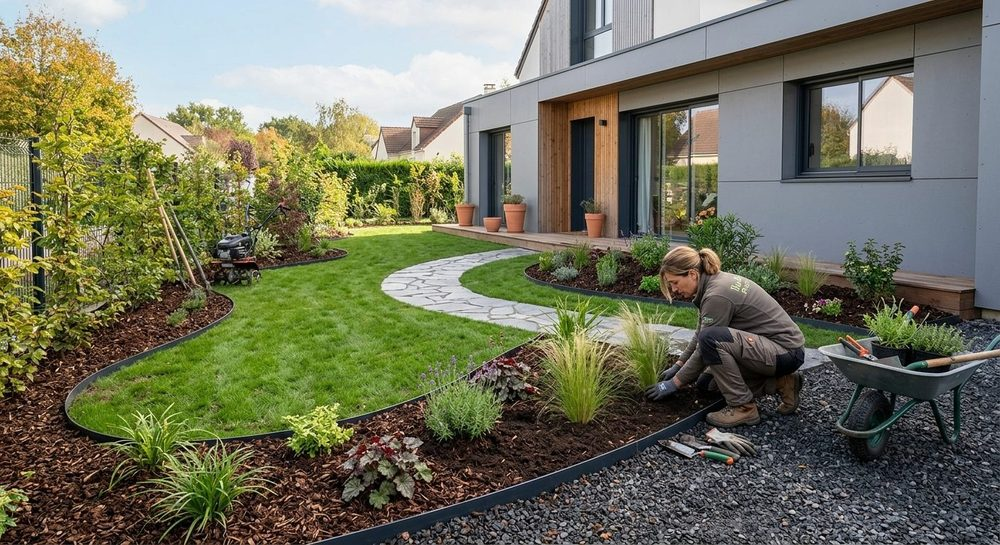
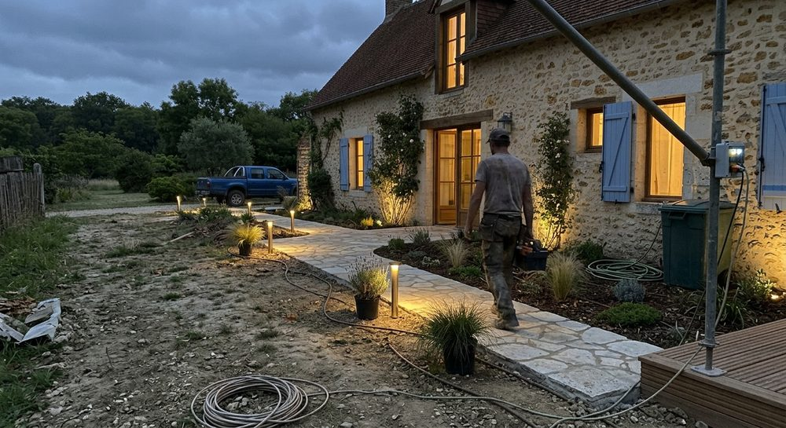

Tout pour créer et faire vivre votre jardin
Du plan au chantier, puis à l’entretien : les travaux d’aménagement paysager confiés à un seul interlocuteur à Corbreuse.




Conception de jardin
Un bon jardin commence par un plan : où vivre dehors, où planter, où circuler. On regarde votre terrain, on écoute vos usages et on vous présente une proposition claire.
- Étude du terrainExposition, pente, sol et vis-à-vis.
- Plan d’aménagementTerrasse, allées, massifs, pelouse.

Création d’espaces verts
Massifs, pelouse, plantations : on installe le végétal qui convient à votre sol et à votre exposition, pour un jardin qui s’installe bien et se travaille sans effort.
- Massifs et plantationsVivaces, arbustes et graminées choisis avec vous.
- PelousePréparation du sol et mise en place.

Terrasses, allées et maçonnerie
Bois, dalles, pavés ou pierre : des ouvrages durables qui structurent le jardin et prolongent la maison.
- Terrasses en boisPose soignée, finitions nettes.
- Allées et dallagesCirculations agréables en toute saison.
- Murets et marches en pierreSoutènements et décors du jardin.

Entretien du jardin
Pelouse, haies, massifs : un jardin régulièrement entretenu garde sa forme et sa valeur. Parlez-nous de ce que vous souhaitez déléguer.
- Tonte et pelouseUn gazon propre et régulier.
- Taille de haiesDes lignes nettes, au bon moment.
Décrivez-nous votre projet
Dites-nous ce que vous imaginez pour votre jardin à Corbreuse ou dans les environs : on revient vers vous pour en parler.